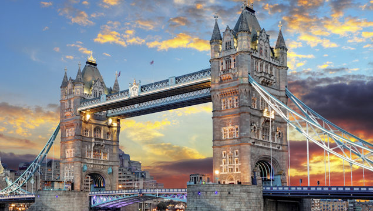

Londres
Sobre Londres
Maior cidade da Europa, Londres tem tudo o que você precisa para ter uma experiência inesquecível . É impossível não se apaixonar por Londres.
A capital do Reino Unido dispensa apresentações. Londres tem muita história, muitos pontos turísticos e muita, muita coisa para fazer. Não importa quanto tempo você permaneça em Londres, sua estada será sempre curta demais para tudo que ela tem a oferecer. Para se ter uma ideia, ao todo, são mais de 300 museus. Os destaques são o Natural History Museum, British Museum, Tate Britain e Tate Modern, onde você pode explorar séculos de história e cultura. Londres também ostenta o título de cidade com mais museus públicos no mundo todo.
Com mais de 1,800 parques, Londres pode ser descrita como uma das cidades mais verdes do mundo. Os parques londrinos oferecem o lugar ideal para relaxar longe do alvoroço da cidade. Além de locais famosos como o Big Ben, o Palácio de Buckingham e a London Eye, as inúmeras atrações culturais de Londres, como musicais, peças de teatro e shows fazem da cidade o lugar perfeito para aprender inglês.
Preço e Condições
Este pacote de viagem de 10 dias inlcui hotel, alimentação, translado e passeios turísticos!
POR INCRÍVEIS R$ 30.000,00